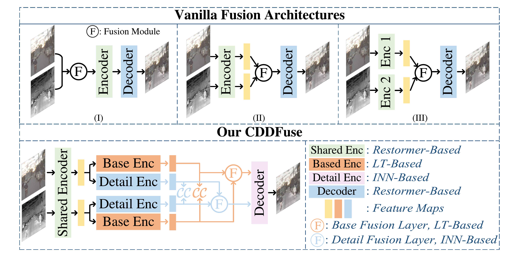
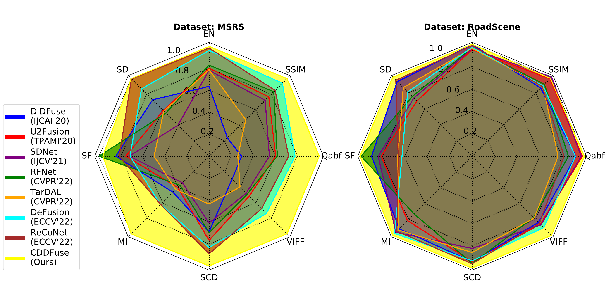
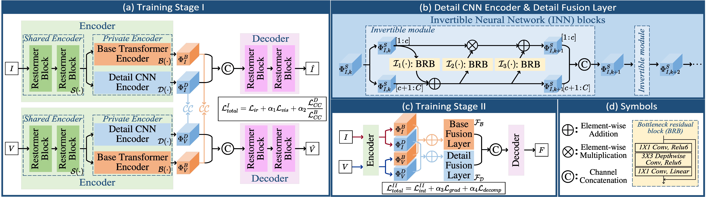
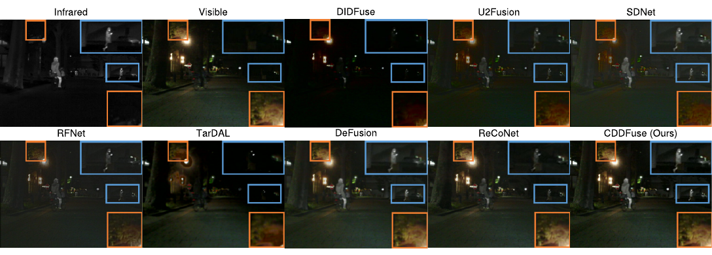
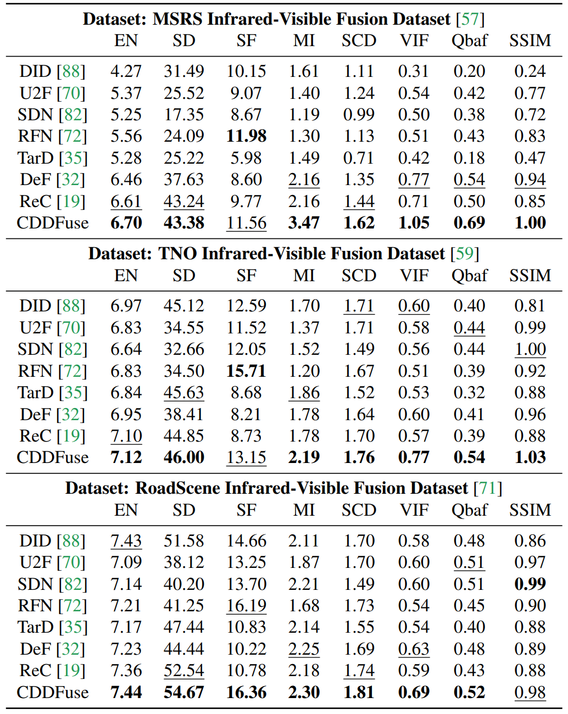
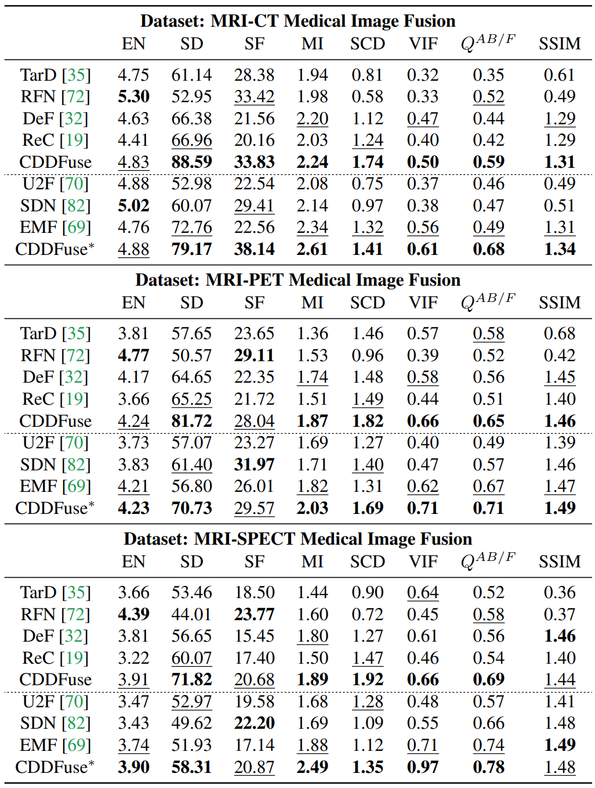
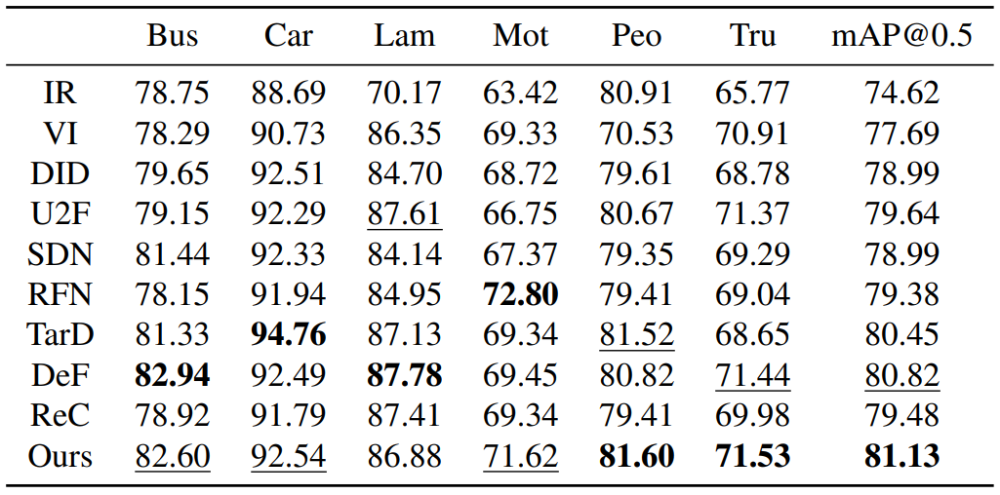
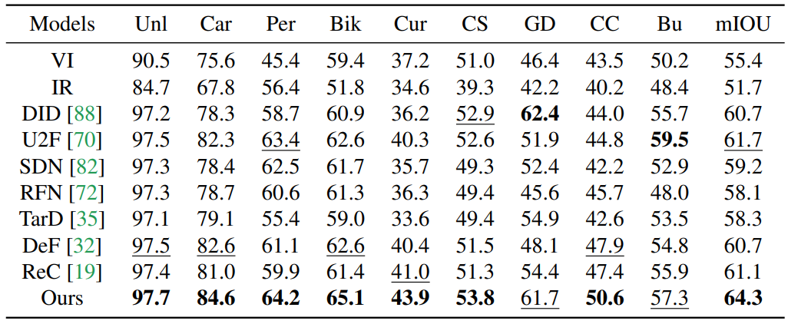
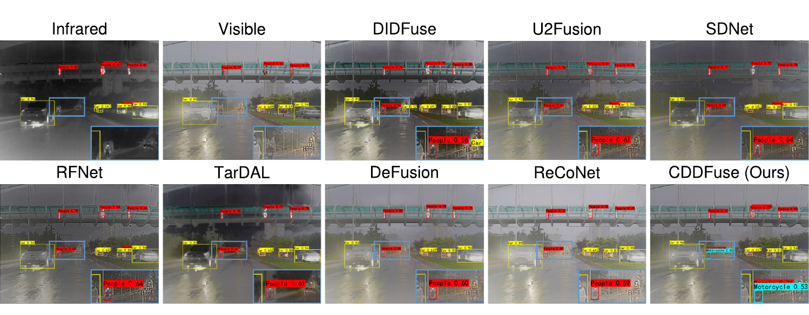

Low-light target saliency
Thermal cues expose people, vehicles, and objects when visible images are degraded.
CVPR 2023
Correlation-Driven Dual-Branch Feature Decomposition for Multi-Modality Image Fusion
Core Idea
Image fusion combines complementary sensor evidence into one informative representation: infrared highlights salient targets under poor illumination, visible images preserve texture and scene context, and medical modalities reveal different anatomical or functional cues.
Thermal cues expose people, vehicles, and objects when visible images are degraded.
Visible images preserve edges, colors, local textures, and readable spatial structure.
Different medical modalities reveal structural and functional cues in the same scene.
Shared layout and modality-specific details are entangled and need explicit constraints.
Separate base and detail paths model shared global structure and modality-specific local evidence.
Correlation constraints narrow the decomposition space instead of relying on a black-box fusion rule.
INN blocks preserve high-frequency textures and thermal targets through invertible transformations.
Fused images improve semantic segmentation and object detection in downstream recognition benchmarks.
Overview


Architecture

CDDFuse first learns an autoencoder-style decomposition pipeline, then fuses decomposed base and detail features to decode the final fused image.
Qualitative Results

CDDFuse preserves salient infrared targets while recovering visible texture and scene structure.


Downstream Recognition



Detection comparison on fused images, highlighting target localization under challenging visibility.
Release
Citation
@InProceedings{Zhao_2023_CVPR,
author = {Zhao, Zixiang and Bai, Haowen and Zhang, Jiangshe and Zhang, Yulun and Xu, Shuang and Lin, Zudi and Timofte, Radu and Van Gool, Luc},
title = {CDDFuse: Correlation-Driven Dual-Branch Feature Decomposition for Multi-Modality Image Fusion},
booktitle = {Proceedings of the IEEE/CVF Conference on Computer Vision and Pattern Recognition (CVPR)},
month = {June},
year = {2023},
pages = {5906-5916}
}